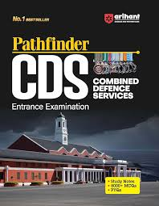

|
CDS — Combined Defence Services Exam
|
Discipline, duty and courage — prepare today to lead tomorrow.
|
1. Basic Information About the Exam
A concise summary of the exam purpose, authority and core eligibility.
- Conducting Authority: Union Public Service Commission (UPSC).
- Purpose: Entry for officers into Indian Military Academy (IMA), Officers' Training Academy (OTA), Indian Naval Academy (INA) and Air Force Academy (AFA) via a single national-level exam.
- Frequency: Twice a year (commonly referred to as CDS I and CDS II).
- Exam mode: Offline (pen-and-paper) written examination as per UPSC notification.
- Application mode: Online only through the official UPSC portal (https://upsc.gov.in / https://upsconline.nic.in).
- Notification months: UPSC issues two notifications annually — typically at the beginning of the year and mid-year. Candidates must refer to the UPSC calendar for exact dates.
- Attempts allowed: No fixed number of attempts; limited only by the upper and lower age limits and other eligibility criteria published in the official notification.
- Gender eligibility: Both male and female candidates are eligible where the academy/branch permits. OTA conducts both male & female recruitment for Short Service Commission; other academies have branch-specific rules. Always verify the latest notification for gender-specific details.
Age Limits
- Indian Military Academy (IMA): Approx. 19–24 years.
- Officers' Training Academy (OTA): Approx. 19–25 years.
- Indian Naval Academy (INA): Approx. 19–22 years.
- Air Force Academy (AFA): Approx. 20–24 years (flying branch has specific age cut-offs and medical norms).
Educational Qualifications
- IMA / OTA / INA: Degree (graduation) from a recognized university in any discipline is the general requirement. Particular branches may have additional or specialised requirements — check the notification for branch-wise details.
- AFA (Air Force Academy): Degree from a recognized university. For the flying branch, candidates usually must have studied Physics & Mathematics at 10+2 level OR possess a Bachelor of Engineering/B.Tech degree. Specific subject and medical standards apply for flying branch candidates.
- Note: These are general/typical requirements. Branch-specific entries (technical branches, short service, special entries) may require engineering degrees or other qualifications. Always consult the current UPSC CDS notification.
2. Result Criteria
How selection progresses from the written exam to commissioning.
- Written examination performance: Candidates are first selected on the basis of aggregate written marks and cut-offs for their applied academy/branch.
- SSB Interview: Shortlisted candidates are called for the Service Selection Board (SSB) process which typically includes:
- Screening Test: Officer Intelligence Rating (OIR) and Picture Perception & Description Test (PP&DT) to filter candidates on day one.
- Psychological Tests: Thematic Apperception Test (TAT), Word Association Test (WAT), Situation Reaction Test (SRT), and self-description to assess personality and mental suitability.
- Group Testing Officer (GTO) Tasks: Group discussions, group planning exercise, outdoor tasks (individual obstacles, command tasks), and group physical tasks to measure leadership, teamwork and planning.
- Personal Interview: A one-to-one interview with the board to evaluate motivation, knowledge, communication, and personal qualities.
- Medical Examination: Candidates recommended by the SSB undergo detailed medical examination as per service-specific medical standards. Medical fitness is mandatory before final selection.
- Final Merit List: Consolidated merit is prepared based on written exam marks and SSB interview (as per UPSC/service rules). Medical clearance is required prior to being included in the final list and joining training.
3. Scope — Posts, Promotions, Salary & Nature of Work
Rank on commissioning
- On successful completion of training, officers are commissioned as:
- Army (IMA/OTA): Lieutenant.
- Navy (INA): Sub-Lieutenant.
- Air Force (AFA): Flying Officer.
Promotion ladder
- Lieutenant / Sub-Lieutenant / Flying Officer → Captain / Lieutenant (Navy) → Major / Lieutenant Commander (Navy) → Lieutenant Colonel / Commander → Colonel / Captain (Navy) → Brigadier / Commodore → Major General / Rear Admiral → Lieutenant General / Vice Admiral → General / Admiral.
- Promotions are a mix of time-scale, merit, selection boards and vacancies; different services and branches have specific promotional pathways.
Salary breakdown
Salaries follow the latest pay commission. Typical components:
- Basic Pay: Entry-level basic pay depending on rank (refer to the current pay matrix).
- Military Service Pay (MSP): Fixed amount for military officers as per pay commission.
- Allowances: Dearness Allowance (DA), Transport/Kit Allowance, Field/Hardship/Compensatory allowances (vary with posting), House Rent Allowance (if not provided government accommodation), Flying Pay (for aircrew), Sea Pay (for navy), etc.
Exact figures change with government pay commission revisions; refer to official service pay scales for current numbers.
Nature of work
- Operations: Tactical planning, commanding units, conducting exercises and operations at unit, formation and staff levels.
- Leadership: Leading soldiers/airmen/sailors, mentoring junior officers and NCOs, responsibility for life, mission and equipment.
- Administration & Staff roles: Logistics, personnel management, training planning, intelligence and liaison duties.
- Field roles: Field deployments, patrols, amphibious operations, air operations and combat missions depending on service and branch.
4. Syllabus
UPSC prescribes a standard CDS syllabus. Below are topic-level breakdowns to plan preparation.
English
- Comprehension of passages
- Vocabulary, synonyms, antonyms
- Grammar (error spotting, sentence correction)
- Sentence completion and paraphrasing
- Precis writing and usage
- Basic knowledge of formal correspondence and official language
General Knowledge (GK)
- Current affairs (national & international events)
- Indian polity and Constitution
- History (modern, medieval basics) and Culture
- Geography (physical, economic, world & India)
- Economy (basic concepts, budgeting, current trends)
- Science & Technology (basic concepts and recent developments)
- Defence & Security related topics
- Environmental ecology and biodiversity
Mathematics
- Arithmetic: Percentages, Ratio & Proportion, Averages, Time & Work, Time & Distance
- Algebra: Simplification, Linear & Quadratic equations
- Trigonometry: Heights & Distances, identities
- Geometry: Lines, angles, triangles, mensuration
- Coordinate Geometry: Straight line, distance, section formula
- Statistics & Probability: Mean, median, probability basics
- Vectors, Matrices (basic topics that appear in CDS syllabus)
OTA Syllabus (Note)
OTA intake via CDS is for officers' training academy — the written exam pattern for OTA excludes Mathematics. Syllabus includes:
- English (as above)
- General Knowledge (as above)
5. Exam Pattern
Written exam followed by SSB for qualified candidates. The written papers are objective-type and set in English.
Written exam pattern (typical)
| Academy / Paper |
Duration |
Maximum Marks |
| English | 2 hours | 100 |
| General Knowledge | 2 hours | 100 |
| Elementary Mathematics (for IMA / INA / AFA) | 2 hours | 100 |
| OTA Pattern | 2 papers — English & GK (each 2 hours) | 100 each |
I MA / INA / AFA vs OTA — key differences
- IMA / INA / AFA candidates sit for three papers (English, GK, Mathematics). OTA candidates sit for two papers (English and GK) — mathematics is not required for OTA.
- Final selection for all academies requires clearing the SSB and medical, but academy-specific cut-offs and physical/medical standards may differ.
- AFA (Flying) has additional medical and educational subject requirements (e.g., Physics & Maths at 10+2 or engineering degree) and stringent medical/vision standards for aircrew.
5-Day SSB pattern (overview)
- Day 1 — Screening: Officer Intelligence Rating tests (OIR) and Picture Perception & Description Test (PP&DT).
- Day 2 — Psychology Tests: TAT, WAT, SRT and self-description.
- Day 3 — GTO Tasks (Outdoor): Group planning exercise, group obstacle, command tasks and individual tasks.
- Day 4 — Personal Interview: In-depth interview with the board; academic and situational questions are asked.
- Day 5 — Conference and Recommendations: Final board conference, results declared as "recommended" or "not recommended".
6. Training Period
Commissioning training varies by academy and branch. Below are typical training locations and approximate durations — always confirm the current service-specific training calendar.
Training academies & typical durations
- Indian Military Academy (IMA), Dehradun: Pre-commission training (approx. 1 to 1.5 years depending on entry and course). Training culminates in commissioning as Lieutenant.
- Officers' Training Academy (OTA), Chennai: Short Service Commission courses typically around 6–12 months (commonly ~49 weeks for certain courses).
- Indian Naval Academy (INA), Ezhimala: Basic naval training; duration varies by course but typically around 1 year for graduate entries (followed by ship/branch specific training).
- Air Force Academy (AFA), Hyderabad: Training period for flying and ground duties typically ranges from 1 to 2 years depending on branch and conversion courses.
|
Note: Exact training durations vary with the type of commission (permanent/short service), specific course calendar and service requirements. Check service websites for precise timelines.
|
What training includes
- Weapons handling & marksmanship
- Fieldcraft, tactical drills and small-unit tactics
- Physical training (PT), endurance, obstacle courses
- Drill, military customs & courtesies
- Leadership development, command tasks and decision-making under stress
- Specialist training depending on branch (aviation, naval seamanship, technical trade courses)
7. Resources (Books, Websites, YouTube)
Curated resources commonly used by aspirants. Prioritise official notifications and up-to-date material.
Standard books
- General: "Pathfinder for CDS & AFCAT" (popular consolidated guide for CDS strategy and solved papers).

- General Knowledge: "Lucent's General Knowledge" — concise facts and background.

- Mathematics: "RS Aggarwal — Quantitative Aptitude" or standard 10+2 level mathematics reference for algebra, trigonometry and geometry.

- English: Word power books, high-quality comprehension practice sets and grammar workbooks (Wren & Martin excerpts, basic practice papers).
- Previous Years' Papers: UPSC CDS past papers and solved compilations to understand pattern and difficulty.
Link to UPSC CDS Previous Papers
Official websites
YouTube channels (popular & focused)
8. Coaching Centres Nearby (Example: Chandigarh)
Selected coaching institutes frequently recommended in Chandigarh region (example list).
- Minerva Academy(Call US) — Comprehensive CDS & SSB coaching, practise tests and interview training.
- Olive Greens(Call US) — Focus on written papers and personality development sessions.
- Chandigarh Academy(Call US) — Classroom coaching and mock SSBs.
- New Careers Academy(Call US) — GK, English and maths foundation courses for CDS aspirants.
- IBT Institute(Call US) — Test series, revision batches and SSB grooming.
|
Visit or contact centres to verify batch schedules, faculty credentials and refund/attendance policies. Many aspirants combine local coaching with online resources for best results.
|
9. Conclusion
CDS is a distinguished national gateway to a career of honour, leadership and service. Preparation demands disciplined study, physical fitness and mental resilience. Study the syllabus carefully, practise previous papers, develop a balanced routine of academics and physical training, and approach the SSB with authenticity and confidence.
Serve with honour — your discipline and dedication will define your leadership and legacy.
|